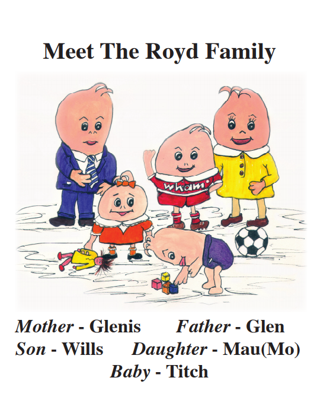

The Glenroyd PPG (Patient Participation Group) aims to give Glenroyd patients
On this site you will find:
- The comic works of Elaine Gaffney.
- The signup form for the Patient Participation Group.
- Other things will go here when we have them.
The PPG Committee is made up of a group of patients who provide
support to the surgery and staff to foster improved communications
between the Practice and Patients. It is run by a collection of about a dozen
patients of assorted interests and professions in a Committee who meet once a
month with the Practise Manager